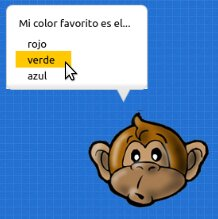

Diálogos
Para contar una historia dentro de un juego podrías hacer que los personajes conversen entre sí.
Esto es muy habitual en un genero de videojuego llamado aventuras gráficas.
Mensajes de dialogo
Para hacer que un personaje emita un mensaje sencillo
puedes usar el método decir:
actor = pilas.actores.Mono()
actor.decir("Eh!, ahora puedo hablar...")
Esto hará que el personaje muestre un globo similar al de las historietas con las frases que has colocado.

Conversaciones
Los mensajes de dialogo se pueden usar para que dos o mas actores puedan conversar entre sí. Esto es útil para contar una historia, ya que le permites al usuario ir viendo paso a paso lo que se dicen los actores entre sí.
Para crear una conversación entre actores tienes que
crear un objeto de la clase Dialogo, luego
indicarle la secuencia de conversación y por último
iniciar el dialogo:
dialogo = pilas.actores.Dialogo()
dialogo.decir(mono, "Hola, como estas?")
dialogo.decir(otro_mono, "Perfecto!!, gracias...")
dialogo.decir(mono, "genial...")
dialogo.comenzar()
Ahora cuando ejecutes este programa, solamente aparecerá
el primer mensaje "Hola, cómo estas?" y solo cuando el
usuario haga click con el mouse avanzará.
Ten en cuenta que el método decir funciona como una
cola de mensajes, es decir, si llamas a decir el mensaje
no aparecerá inmediatamente. El mensaje aparecerá cuando
corresponda según el orden de la conversación que se siga.
Si quieres que un botón accione un mensaje y lo haga
de manera inmediata tendrías que usar un método cómo dialogo.decir_inmediatamente.
Preguntas
Para desarrollar conversaciones con preguntas también puedes usar a los diálogos. Lo único diferente es que las preguntas traerán asociada una repuesta del usuario, y para manejar el resultado tienes que escribir una función.
La función se invocará cuando el usuario haga click en alguna de las opciones. Y cuando se llame la función se pasará la respuesta que ha elegido como una cadena de texto.
Aquí tienes una ejemplo de una pregunta con 3 respuestas. Cuando el usuario elija una repuesta el personaje volverá a decirlo:
def cuando_responde_color_favorito(respuesta):
dialogo.decir(mono, "he dicho: " + respuesta)
dialogo.elegir(mono, "Mi color favorito es el...", ["rojo", "verde", "azul"], cuando_responde_color_favorito)
